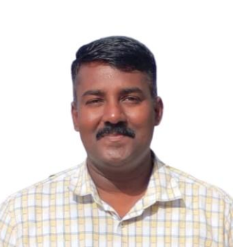

Thiagarajar School of Management, Madurai · Top 2% Scientist, Stanford World Rankings
Building the evidence base for sustainable, circular supply chains — researching how organisations adopt lean-green practices, circular economy models and multi-criteria decision frameworks across global manufacturing and logistics networks.

Dr. K. Mathiyazhagan studies how organisations make supply chains greener, leaner and more resilient — work that has placed him among Stanford's list of the world's top 2% of scientists.
He currently serves as Professor & Head of Research Centre at Thiagarajar School of Management, Madurai, where he leads research on sustainable supply chain management, circular economy adoption, lean six sigma and multi-criteria decision making. His path has taken him through doctoral and postdoctoral research at NIT Tiruchirappalli and the University of Southern Denmark, academic posts at The NorthCap University and Amity University, and a continuing visiting faculty role at Tor Vergata University of Rome.
Beyond his own publication record, he sits on the editorial boards of several high-impact international journals, has edited seven books on blockchain, circular economy and Industry 4.0 themes, and is a frequent invited speaker on how researchers can publish in — and edit for — top-tier journals.
Core research areas
Click a card to see related themes drawn from his published work, editorial special issues and books.
Barriers, pressures and enablers for greening supply chains — from AHP and ISM barrier models to resilience post-COVID-19.
Drivers and barriers for SMEs and large manufacturers transitioning from linear to circular models, including e-waste and blockchain-based traceability.
Process-improvement and lean-green manufacturing frameworks applied across electrical, electronics and automotive industries.
Applying AHP, ISM, TISM, DEMATEL and fuzzy methods to structure complex sustainability and supply-chain decisions.
How his core themes connect to the wider fields he publishes and edits special issues in.
Figures below are a CV snapshot rather than a live feed — updated periodically from the source academic profiles.
Snapshot as of the 2026 CV update. See live figures on Google Scholar or Scopus.
Search or filter the selected list below. This is a subset of the full publication record — the complete list is available in the downloadable CV.
Looking for the complete bibliography? Download the full CV (PDF) for the archive view.
Active reviewer for 30+ international journals, including:
Institutions and countries reflect invited visits and collaborations documented in the CV — not permanent affiliations.
Teaching runs alongside — not apart from — the research programme: courses are built to bring live sustainability and supply-chain research into the classroom, and consistently return an aggregated feedback score of 9.27 out of 10 across all courses delivered.
Courses delivered
Filter by engagement type — recent international sessions are shown first.
For journal collaborations, PhD supervision enquiries, invited talks or research partnerships, reach out directly or connect via an academic profile.